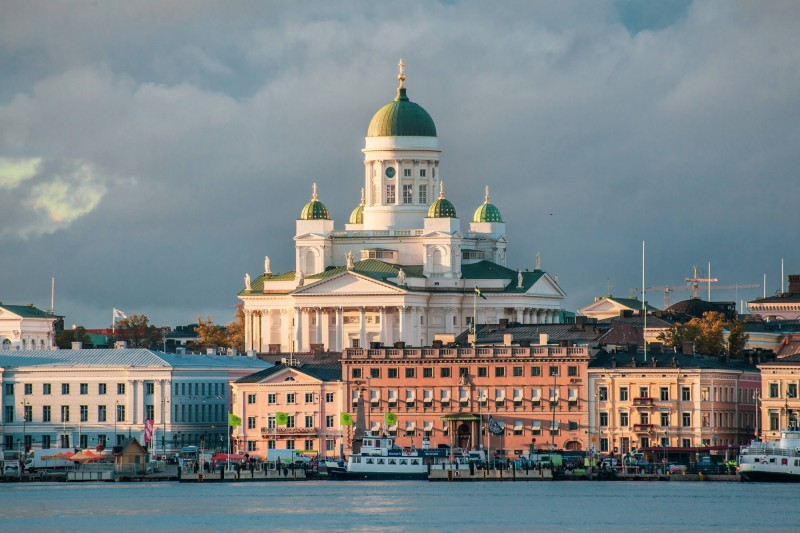
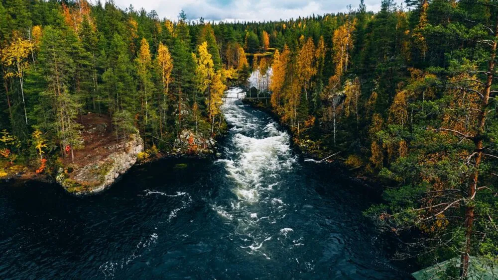

Finsko se nachází mezi 60 ° a 70 ° severní šířky a 20 ° a 32 ° východní délky, což ho řadí mezi nejsevernější země světa. Reykjavík je jedinou světovou metropolí ležící severněji než Helsinky. Vzdálenost od nejjižnějšího bodu v Hanko v Uusimaě po nejsevernější bod v Nuorgamu v Laponsku je 1160 km.
Finsko je domovem přibližně 168 000 jezer (s plochou větší než 500 m2) a 179 000 ostrovů. Saimaa, největší finské jezero, patří mezi čtvrtá největší jezera v Evropě. Finská jezerní oblast má největší koncentraci jezer v zemi. Největší počet ostrovů se nachází na jihozápadě, v Ostrovním moři mezi kontinentálním Finskem a hlavním ostrovem Aland.
Převážná část geomorfologie Finska je důsledkem doby ledové. Ledovce ve Fennoskandinávii byly mohutnější a přetrvávaly déle než v jiných částech Evropy. Jejich erozivní působení zanechalo finskou krajinu převážně rovinatou, s několika kopci a málo horami. Nejvyšším bodem Finska je Halti (1324 m) na hranici mezi Finskem a Norskem, ležící na úplném severu Laponska. Nejvyšší hora, která leží výhradně ve Finsku, je Ridnitšohkka (1316 m), nacházející se vedle Halti.
Helsinki je nejen politickým a ekonomickým centrem Finska, ale také největším městem země. Nachází se na severním pobřeží Baltského moře a je známé svými nádhernými architektonickými památkami, jako je Katedrála v Helsinkách nebo moderní budova finské národní knihovny. V blízkosti Helsinek se nachází přírodní rezervace Nuuksio, která je oblíbeným cílem turistů.
Dalším významným městem ve Finsku je Turku, které se nachází na západním pobřeží země. Je to historicky významné město s mnoha středověkými památkami, jako je hrad Turunlinna a katedrála Turku. Turku je také významným přístavem a turisty sem láká i krásná řeka Aurajoki, která protéká městem. Na sever od Helsinek se nachází město Tampere, které je největším městem ve vnitrozemí Finska. Je známé svou bohatou průmyslovou historií a je označováno jako "finské Manchester". Tampere je také obklopeno překrásnou přírodou, která zahrnuje mnoho jezer a lesů.
Jyväskylä je další významné město ve vnitrozemí Finska. Nachází se v provincii Střední Finsko a je známé svou univerzitou a sportovními akcemi. Jyväskylä je také výchozím bodem pro návštěvu národního parku Nuuksio, kde můžete objevovat krásy finské přírody. nDalšími významnými městy ve Finsku jsou Oulu na severu země, které je obklopeno nádhernou přírodou a je známé svou technologickou vysokou školou, a Rovaniemi na severu země, které je známé jako oficiální "domov" Santa Clause a taktéž obklopen lesy a jezery. Všechna tato města mají jednu věc společnou – krásnou a bohatou finskou přírodu. Finsko je známé svými rozsáhlými lesy, jezery a fjordy. Je to ideální destinace pro milovníky outdoorových aktivit a přírodního bohatství.
Finsko je země s ohromující přírodní krásou a silným závazkem ochrany životního prostředí. Svého prvního národního parku se tato země dočkala v roce 1938 a od té doby jich vzniklo téměř 40. Finská příroda je charakteristická rozlehlými lesy, tisíci jezery, nádhernými fjordy a vodopády. Nejznámějšími oblastmi jsou například Národní park Pyhä-Luosto, který se rozprostírá v severní části země a je domovem pro jedinečnou arktickou faunu a floru. Další národní parky, jako Koli a Oulanka, nabízejí nádherné výhledy a možnosti pro turistiku a outdoorové aktivity.
Finsko také považuje ochranu přírody za důležitou a jednu ze svých priorit. Zemi pokrývá přibližně 75 % lesů, které jsou pečlivě spravovány a chráněny. V celém Finsku je také mnoho přírodních rezervací a chráněných oblastí, kde je zakázáno kácení stromů a stavební činnost. Finská vláda investuje do ochrany životního prostředí a podporuje udržitelný rozvoj, aby se zajistilo, že se přírodní krása této země bude moci těšit i budoucí generace.
Turismus hraje také důležitou roli v ochraně finské přírody. Lidé z celého světa navštěvují Finsko, aby si užili jeho krásy a outdoorových aktivit. Místní organizace a turistické společnosti dbají na udržitelný turismus a propagují odpovědné cestování. Turisté jsou vyzýváni, aby si vychutnávali přírodu s ohledem na dopad svých aktivit a dodržovali pravidla ochrany přírody.
Finské národní parky jsou poklady divoké přírody, které odrážejí rozmanitost a jedinečnost finské krajiny. Lemmenjoki National Park, umístěný v Laponsku, těší návštěvníky bohatými řekami a tundrou, poskytující pohled do divoké severské scenérie. Pyhä-Luosto National Park na hřebeni Fennoskandinávie nabízí panoramatické výhledy, rozmanité lesy a geologické skvosty.
Ranua Wildlife Park představuje jedinečnou možnost pozorování arktických zvířat včetně medvědů a sobů. Repovesi National Park s jezery a skalními formacemi poskytuje ideální prostředí pro outdoorové aktivity. Národní parky nejen chrání místní ekosystémy, ale také zvou návštěvníky k objevování klidné finské přírody, od tajemných lesů po dramatičtější arktické scenérie. Pro milovníky dobrodružství a přírodních krás jsou finské národní parky neodolatelným lákadlem, nabízejícím pohlcující zážitky v srdci severské divočiny.
Každý národní park v Finsku má svou vlastní jedinečnou atmosféru a biodiverzitu. Turisté si zde mohou užít klidnou atmosféru finské přírody, od klidných lesů až po dramatičtější arktické scenérie. Tyto parky nejen chrání místní ekosystémy, ale také poskytují fascinující zážitky pro milovníky přírody a dobrodružství.
